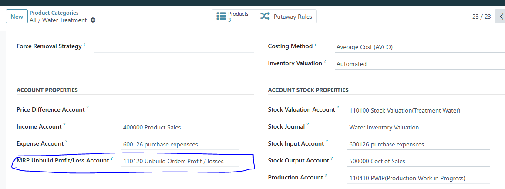
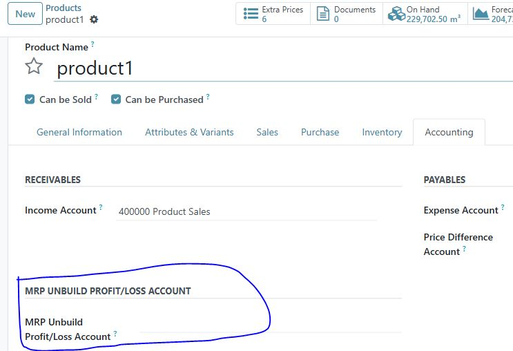
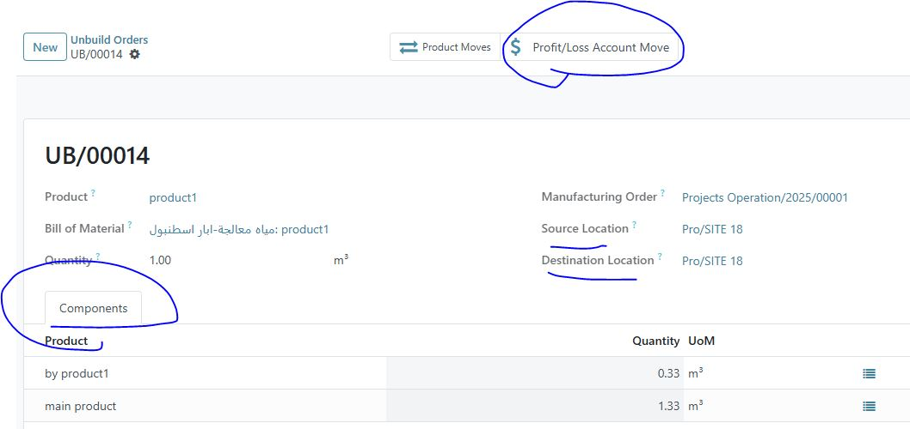

When making a MRP Unbuild Order, it is one of the standard errors of Odoo as the following:
1-It allows the selection of Products that do not have a BOM, i.e. they do not have raw material to dismantle into.
2- It allows the dismantling of Products whose BOM type is "KIT" and whose inventory balance is zero, and here inventory errors occur, as the inventory balance is negative for an product that cannot be produced "according to the type of the list of materials", so it cannot appear in an inventory balance at all unless, before dismantling this product, it is received in storage location in its final form as a final product and not its components are received, and its balance is equal to or greater than the quantity required to be dismantled.
But we have solved these problems as follows:
1- Create a domain when selecting a product that is to be disassembled into its raw materials by displaying only products that have a BOM only.
2- When selecting a product and does not have a stock balance that allows the operation, a message appears to prevent the user and alerts him that the stock balance does not allow the disassembly order to be executed for this product
Product Categories Screen
Define MRP Unbuild Profit/Loss Account used if journal entries for Unbuild order Components different with final product journal entry amount
Or Define MRP Unbuild Profit/Loss Account in Product Screen

Unbuild Orders screen developed as the following screen
Unbuild Orders Profit/Loss Account Buttun to brows Journal entry for the difference if exist if Unbuild Orders related production Order then the source location and destination location will be relted production order locations production orders list filterd by done production orders related Unbuild Order product Unbuild Order Components Table added by this module to appear moved Components after Unbuild Order done
Support services will be provided from Sunday to Thursday, 10:30 AM to 6:30 PM (Cairo Time).